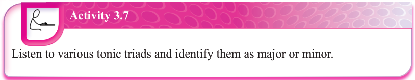
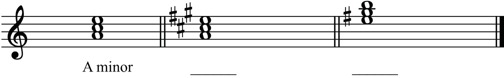
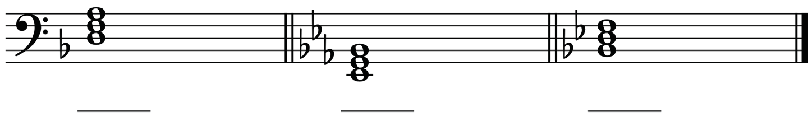
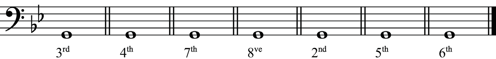
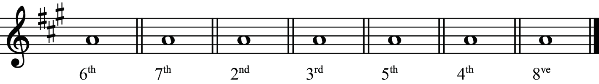
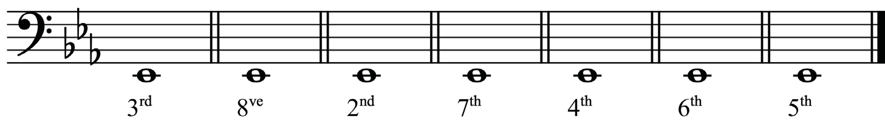
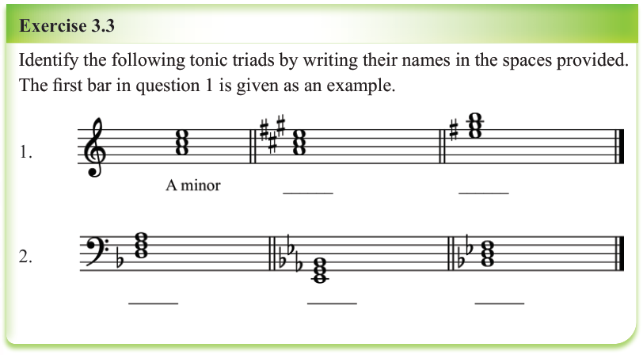

Activity 3.7
Listen to various tonic triads and identify them as major or minor.Exercise 3.3
Identify the following tonic triads by writing their names in the spaces provided.
The first bar in question 1 is given as an example.
1.

2.

Revision exercise 3
1.
In each of the following bars, add the upper note to construct the harmonic interval based on the interval quantity given.
(i)

(ii)

(iii)

2.
In each of the following bars, add the bottom note to construct the harmonic interval based on the interval quantity given.


![Revision exercise 3. Question 1 asks students to add the upper note in each bar to construct the harmonic interval named below. Row (i) is in bass clef with interval labels 3rd, 4th, 7th, 8ve, 2nd, 5th, and 6th. Row (ii) is in treble clef with three sharps and labels 6th, 7th, 2nd, 3rd, 5th, 4th, and 8ve. Row (iii) is in bass clef with three flats and labels 3rd, 8ve, 2nd, 7th, 4th, 6th, and 5th. Question 2 begins below, asking students to add the bottom note to construct the harmonic interval based on the interval quantity given.](images/pg063_im013.png)